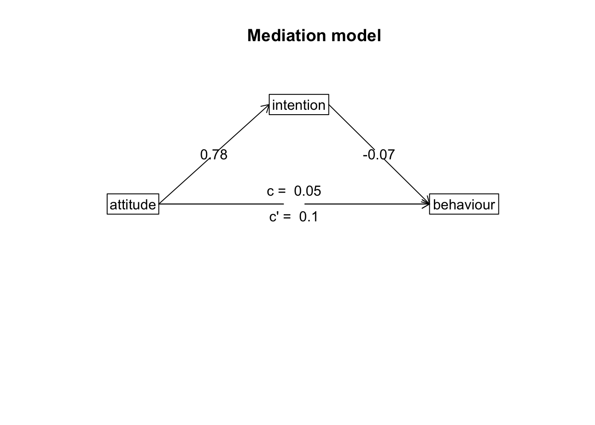

Content
These are the packages we will be using in this demonstration. If
you’ve been following the demonstrations sequentially, you should be
familiar with the tidyverse and lm.beta
packages. The pwr and pwrss packages are used
to conduct standard power analyses for common statistical tests, while
the psych package has many useful functions; however, we
will just be using it to run a mediation analysis via bootstrapping. As
always, for the packages that you are encountering for the first time,
make sure to install them onto your computer first.
library(pwr)
library(pwrss)
library(tidyverse)
library(lm.beta)
library(psych)pwr Package
For most standard analyses, such as an independent-samples t-test,
the easiest way to conduct power analyses is by using functions in the
pwr package. Functions from the pwr package
work by specifying three of four bits of information that influence
statistical power: the expected effect size, power threshold, and
significance level (alpha), and the sample size. The function will then
return whichever of the four parts was not specified. Typically, power
analyses are used to calculate the sample size required before a study
is conducted; therefore, this is what we will be focusing on here.
We will cover four examples: a power analysis for a correlation, an independent-samples t-test, a one-way ANOVA, and a multiple regression.
As mentioned above, these functions expect an effect size measure,
and each pwr function (annoyingly) uses a different effect size measure
(e.g., r, Cohen’s d, Cohen’s f, etc.). You can view all the effect sizes
used by these functions and their standard interpretation using the
cohen.ES() function. To use this function, you simply need
to state which effect size measure you’re interested in, and the size
that you expect (either small, medium, or big). Here’s an example:
cohen.ES(test = "f2",size = "medium")##
## Conventional effect size from Cohen (1982)
##
## test = f2
## size = medium
## effect.size = 0.15pwr and correlations
To conduct a power analysis for a correlation, we can use the
pwr.r.test() function. This function expects three of four
arguments:
- n = Sample Size
- r = Expected Effect size
- sig.level = Significance Level
- power = Power threshold
As discussed in the lecture, things like the significance level and power threshold are already chosen for you. Conventionally, the significance level is set to .05, while the power threshold is .80 (80%). Therefore, you only need to decide the expected effect size to calculate the required sample size.
Recall from the lecture series the following interpretation:
| Effect size | r |
|---|---|
| Small | .10 |
| Medium | .30 |
| Large | .50 |
Therefore, if we needed to calculate the required sample size for a correlation where you expect a medium effect, you could use the following code:
pwr.r.test(r = .30,sig.level = .05,power = .80)##
## approximate correlation power calculation (arctangh transformation)
##
## n = 84.07364
## r = 0.3
## sig.level = 0.05
## power = 0.8
## alternative = two.sidedThis would indicate that we would require a sample of 85 participants (rounded-up) to detect a medium effect. By playing around with the expected effect size, we can see how this impacts the required number of participants. For instance, if we expect a small effect, we will need a much larger sample size:
pwr.r.test(r = .10,sig.level = .05,power = .80)##
## approximate correlation power calculation (arctangh transformation)
##
## n = 781.7516
## r = 0.1
## sig.level = 0.05
## power = 0.8
## alternative = two.sidedpwr and t.tests
Similarly, we can use pwr.t.test() to conduct a power
analysis for an independent-samples t-test. However, one thing to note
is that the expected effect size for this function is a Cohen’s
d. Therefore, we can use the following conventions:
| Effect size | d |
|---|---|
| Small | .20 |
| Medium | .50 |
| Large | .80 |
So, if we expect a medium effect, the code would be:
pwr.t.test(d = .50,sig.level = .05,power = .80)##
## Two-sample t test power calculation
##
## n = 63.76561
## d = 0.5
## sig.level = 0.05
## power = 0.8
## alternative = two.sided
##
## NOTE: n is number in *each* groupNote that the expected effect size is the minimum for each group. Therefore, you would need a total sample of 128 participants (rounded-up).
We can also use the same function to run a power analysis for a
paired-samples t-test. To do this, we need to set the type
argument to equal “paired”. In the code below, we see for a
paired-sample t-test, we require 90 participants (rounding-up) to detect
a medium effect (Cohen’s d = .30) with 80% power. Note that the n is for
the number of pairs, so 90 is the total number of participants
needed.
pwr.t.test(d = .30,sig.level = .05,power = .80,type = "paired")##
## Paired t test power calculation
##
## n = 89.14938
## d = 0.3
## sig.level = 0.05
## power = 0.8
## alternative = two.sided
##
## NOTE: n is number of *pairs*pwr and ANOVAs
For a one-way ANOVA, we can use the pwr.anova.test()
function. This analysis assumes there will be equal numbers in each
group. Again, this function uses another measure of effect size, Cohen’s
f, which you can use the following interpretations:
| Effect size | f |
|---|---|
| Small | .10 |
| Medium | .25 |
| Large | .40 |
This function also requires an additional parameter k,
which is the number of levels (or groups) in the IV. So, if you were
conducting a one-way ANOVA with three groups in the IV, and expect a
medium effect, the code would look like this:
pwr.anova.test(k = 3,f = .25,sig.level = .05,power = .80)##
## Balanced one-way analysis of variance power calculation
##
## k = 3
## n = 52.3966
## f = 0.25
## sig.level = 0.05
## power = 0.8
##
## NOTE: n is number in each groupAgain, the value provided for n is for each group, so you would need a total of 159 participants (rounded-up).
pwr and multiple regressions
For a power analysis for a multiple regression, we use
pwrss.f.reg() - this function comes from a separate
package, pwrss. Here, for the effect size measure, you can
use either the R-square (or the coefficient of determination) or a new
effect size measure called Cohen’s f-squared. Note that this power
analysis is for the overall model - to conduct a power analysis for the
effect of one predictor in the model, you would need to use the
difference in R-square (i.e., how much variance does your predictor
explain above all the other covariates). See the table below for
standard interpretations:
| Effect size | f2 | R-square |
|---|---|---|
| Small | .02 | .02 |
| Medium | .15 | .13 |
| Large | .35 | .26 |
For the pwrss.f.reg() function, you need to also specify
the number of predictors in the model as the argument k.
Note, if you have an interaction term in your analysis, this counts as
an additional predictor. As an example, if you were conducting a
multiple regression with 4 predictors and expect a medium effect, the
code for the power analysis would look like:
pwrss.f.reg(k = 4,f2 = .15,alpha = .05,power = .80)## Linear Regression (F test)
## R-squared Deviation from 0 (zero)
## H0: r2 = 0
## HA: r2 > 0
## ------------------------------
## Statistical power = 0.8
## n = 85
## ------------------------------
## Numerator degrees of freedom = 4
## Denominator degrees of freedom = 79.45
## Non-centrality parameter = 12.667
## Type I error rate = 0.05
## Type II error rate = 0.2Or…
pwrss.f.reg(k = 4,r2 = .13,alpha = .05,power = .80)## Linear Regression (F test)
## R-squared Deviation from 0 (zero)
## H0: r2 = 0
## HA: r2 > 0
## ------------------------------
## Statistical power = 0.8
## n = 85
## ------------------------------
## Numerator degrees of freedom = 4
## Denominator degrees of freedom = 79.755
## Non-centrality parameter = 12.665
## Type I error rate = 0.05
## Type II error rate = 0.2Therefore, you would need at least 85 participants for this study.
Power Analyses via Simulations.
Above, we cover functions that allow you to conduct power analyses for common statistical techniques used in psychological research. However, if you are dealing with a more complicated design/statistical test, then these easy-to-use functions become less helpful. One way to conduct a power analysis is via simulation. For more information on this, see this extra content page.
Mediation
As covered in the lecture series, mediation describes a relationship where the influence of one variable on another can be explained through a third variable. In the example below, we will test whether the relationship between attitudes towards exercise and exercise behaviour can be explained through intentions to exercise (i.e., individuals who have positive attitudes about exercise increase their intention to exercise, which in turn increases exercise behaviour). For more information on these scales (and some of the ones we will use later), see this paper: https://search.proquest.com/docview/202682863. Note, we only use the first 5-items on each scale to keep things simple.
1. Clean data for analysis.
First, we must calculate the variables that we need for our analysis. This process should be fairly familiar by now.
data.clean <- data %>%
mutate(attitude = exercise.attitude.1 + exercise.attitude.2 + exercise.attitude.3 + exercise.attitude.4 + exercise.attitude.5,
intention = exercise.intention.1 + exercise.intention.2 + exercise.intention.3 + exercise.intention.4 + exercise.intention.5,
behaviour = exercise.behaviour.1 + exercise.behaviour.2 + exercise.behaviour.3 + exercise.behaviour.4 + exercise.behaviour.5) %>%
dplyr::select(student.no,attitude,intention,behaviour) %>%
drop_na(attitude) %>%
drop_na(intention) %>%
drop_na(behaviour)2. Run statistical test
Remember, mediation is when the effect of one IV could be explained through a third variable (mediation). If there is an effect in a model without the mediator, but that effect is reduced (or disappears) when the mediator is included, there is a chance the mediation is happening. In order to check whether our variables meet these conditions, we need to conduct a series of linear regressions.
Model 1
Here, we test whether there is an association between the predictor (attitudes) and the outcome variable (behaviour):
lm(behaviour ~ attitude,data = data.clean) %>%
lm.beta() %>%
summary()##
## Call:
## lm(formula = behaviour ~ attitude, data = data.clean)
##
## Residuals:
## Min 1Q Median 3Q Max
## -14.3112 -4.0138 0.4732 3.1144 18.2836
##
## Coefficients:
## Estimate Standardized Std. Error t value Pr(>|t|)
## (Intercept) -4.5011 NA 4.5440 -0.991 0.324970
## attitude 0.6487 0.4053 0.1657 3.915 0.000192 ***
## ---
## Signif. codes: 0 '***' 0.001 '**' 0.01 '*' 0.05 '.' 0.1 ' ' 1
##
## Residual standard error: 6.472 on 78 degrees of freedom
## Multiple R-squared: 0.1642, Adjusted R-squared: 0.1535
## F-statistic: 15.33 on 1 and 78 DF, p-value: 0.0001921Model 2
Here, we test whether including the mediator (intention) in the model changes the relationship between the predictor (attitude) and the outcome variable (behaviour):
lm(behaviour ~ attitude + intention,data = data.clean) %>%
lm.beta() %>%
summary()##
## Call:
## lm(formula = behaviour ~ attitude + intention, data = data.clean)
##
## Residuals:
## Min 1Q Median 3Q Max
## -15.4020 -3.3048 0.2817 3.1691 18.7324
##
## Coefficients:
## Estimate Standardized Std. Error t value Pr(>|t|)
## (Intercept) -7.2219 NA 4.8450 -1.491 0.140154
## attitude 0.5908 0.3691 0.1686 3.504 0.000767 ***
## intention 0.1771 0.1609 0.1160 1.527 0.130739
## ---
## Signif. codes: 0 '***' 0.001 '**' 0.01 '*' 0.05 '.' 0.1 ' ' 1
##
## Residual standard error: 6.417 on 77 degrees of freedom
## Multiple R-squared: 0.1888, Adjusted R-squared: 0.1678
## F-statistic: 8.962 on 2 and 77 DF, p-value: 0.0003169Model 3
Also, in order for there to be a mediation, we must observe a relationship between the predictor (attitude) and the mediator (intention):
lm(intention ~ attitude,data = data.clean) %>%
lm.beta() %>%
summary()##
## Call:
## lm(formula = intention ~ attitude, data = data.clean)
##
## Residuals:
## Min 1Q Median 3Q Max
## -17.880 -4.212 1.437 4.158 11.793
##
## Coefficients:
## Estimate Standardized Std. Error t value Pr(>|t|)
## (Intercept) 15.3613 NA 4.3996 3.492 0.000794 ***
## attitude 0.3269 0.2248 0.1604 2.038 0.044957 *
## ---
## Signif. codes: 0 '***' 0.001 '**' 0.01 '*' 0.05 '.' 0.1 ' ' 1
##
## Residual standard error: 6.266 on 78 degrees of freedom
## Multiple R-squared: 0.05055, Adjusted R-squared: 0.03838
## F-statistic: 4.153 on 1 and 78 DF, p-value: 0.04496Mediation Analysis
While the above is useful to see whether the conditions for a
mediation are met. In actuality, they don’t need to be done when
conducting/reporting a mediation analysis. We can conduct the actual
mediation analysis in R, which includes all the steps above, using the
aptly named mediate() function from the psych
package.
library(psych)Like all analysis functions, the mediate() function
accepts a formula and a data.frame, but also a couple of options that we
will want to change. For the formula, the mediate function takes a
specific form, where the mediator is put inside brackets on the
right-hand side of the ~ symbol:
DV ~ IV + (Mediator)So for our analysis, the code becomes the following. Note, we also
want to set the ‘std’ argument to TRUE to ensure we receive
standardised estimates, and the ‘plot’ argument to FALSE so
we are only seeing the numeric output (we will see the plot later).
model <- mediate(behaviour ~ attitude + (intention),data = data.clean,std = TRUE,plot = FALSE)
model##
## Mediation/Moderation Analysis
## Call: mediate(y = behaviour ~ attitude + (intention), data = data.clean,
## std = TRUE, plot = FALSE)
##
## The DV (Y) was behaviour . The IV (X) was attitude . The mediating variable(s) = intention .
##
## Total effect(c) of attitude on behaviour = 0.41 S.E. = 0.1 t = 3.92 df= 78 with p = 0.00019
## Direct effect (c') of attitude on behaviour removing intention = 0.37 S.E. = 0.11 t = 3.5 df= 77 with p = 0.00077
## Indirect effect (ab) of attitude on behaviour through intention = 0.04
## Mean bootstrapped indirect effect = 0.04 with standard error = 0.03 Lower CI = -0.02 Upper CI = 0.11
## R = 0.43 R2 = 0.19 F = 8.96 on 2 and 77 DF p-value: 3.66e-05
##
## To see the longer output, specify short = FALSE in the print statement or ask for the summaryMost of the information above is what we have encountered previously
(e.g., we are given the total and direct effects that could be
interpreted from the regressions above). The main information we are
interested in this output is the line on the mean bootstrapped indirect
effect. A large indirect effect (and consequently a greater drop between
the total effect and the direct effect) would indicate that mediation is
occurring. Since we are bootstrapping, we can tell the significance
through confidence intervals. If the range between the lower CI and the
upper CI contains zero, then the indirect effect is not significant
(i.e., a population where the indirect effect is 0 could
have produced our data). If this range does not contain zero, then we
have a significant mediation effect.
3. Plot data
Path Diagram
For mediation, there’s no good way to plot the raw data that
visualises the mediation. The most common way to visualise a mediated
effect is through a path diagram. You can do this directly in the
mediate() function by setting the ‘plot’ argument to
TRUE or use the mediate.diagram() like
below:
mediate.diagram(model)
4. Write-up analysis.
There are several things you need to include when writing up a
mediation analysis. Writing up a mediation analysis includes reporting
the total and direct effects (in Model 1 and Model 3 above respectively,
but these numbers are also included in the output for the
mediate() function), and also the estimated indirect effect
and associated confidence intervals. Usually, you would want to
accompany the write-up with a path diagram such as the one above.
A mediation analysis via bootstrapping was conducted to assess whether the association between attitudes towards exercise and exercise behaviour was mediated by intentions to exercise. The total effect of exercise attitudes on behaviour was significant (beta = 0.41, p < .001). When intentions to exercise was included into the model, the direct effect of attitudes on behaviour was still significant (beta = 0.37, p = 0.001). Mediation analysis found a non-significant indirect effect (mean bootstrapped indirect effect = 0.37, 95% CI = -0.02, 0.11). This would indicate intentions to exercise does not mediates the association between exercise attitudes and exercise behaviour.
Note: While we report the results in text above, it is sometimes also easier to report the separate models in a table.